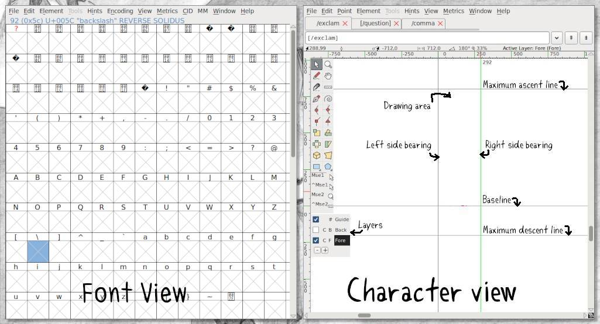
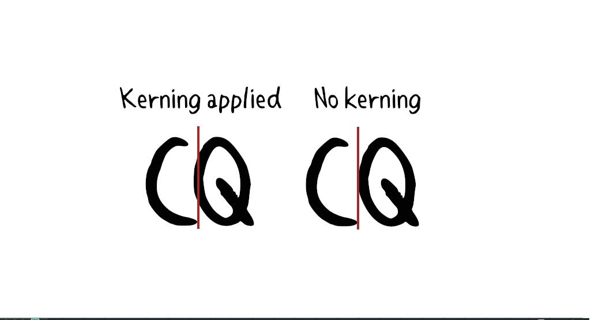

About
About Projects
Projects Books
Books Games
Games Stories
Stories Store
Store Collection
Collection Notes
NotesThis month I decided to try and learn how to make a font to use in my comic hakum. Previously, I was drawing the text digitally with my pen tablet, the result was fine but difficult to read. I didn't want to use an existing font, so I decided to try and learn to make a font based on my own handwriting.
Disclaimer: This is my first time making a font. I'm not a designer, nor do I master font creation in general or the use of FontForge. I create things out of necessity, and for fun.
This write-up is to describe my process, and can maybe help beginners like me make their first font for personal use. I made a TTF font for use in web publishing. It is not a full font(no bold, or italics).
Making a font
I made two iterations of my font(which I named Katkum), the first was based on my digital handwriting(using a pen tablet), and the second was made from a scanned image of my handwriting. The second iteration of the font was more natural because on paper my writing is less precise, more organic.

I learned a lot about fonts while making my own, namely the terms listed below which describe all parts of a typeface. Knowing these terms and their function can help you make better design choices, and will ensure that you draw a functional font.
The typeface anatomy

- Ascender: The portion of a minuscule letter that extends above the mean line of a font. That is, the part of a lower-case letter that is taller than the font's x-height.
- Baseline: The line upon which most letters sit and below which descenders extend.
- Cap Height: A line representing the height of most capital letters.
- Descender: The portion of a letter that extends below the baseline of a font (ex: p and q).
- X-Height: The distance between the baseline and the mean line of lowercase letters in a typeface.
For my handwritten font I focused on the uppercase(A-Z) and lowercase(a-z) glyphs, numbers(0-9), and glyphs for basic punctuation(comma, exclamation mark, question mark, etc).

In my sketchbook, I drew reference lines for the baseline, the cap height, x-height, and for the descender in pencil. I didn't draw them especially large, nor did I put extra care in drawing them. When I think too much about my own handwriting it tends to deviate too much, so I drew them quickly.
The characters turned out okay, but drawing between the reference lines made them too stiff. I instead wrote the phrase "The quick brown dog jumps over the lazy fox" a bunch of times in both uppercase and lowercase letters, which features all of the characters needed for a font(a-z). My writing comes out better when writing a sentence then when trying to draw on a grid.
I picked out the best-written sentence and used that to make the font(ended up using some I'd drawn on the grid too). Doing it this way means that I would have to fix the cap-height, x-height, and descender of each character digitally so they'd match up.
After I scanned the image, I applied a threshold(Color > Threshold in Gimp) to the image to remove all grays.

Then because of the nature of pencil on paper, and because I didn't use a grid, I spent time fixing some of the imperfections in the letters using the pencil tool in Gimp(with all dynamics turned off in Tool Options). If using a raster brush, it is necessary to apply threshold again to the image. The goal is to get clean lines.

I copy/pasted all of the cleaned-up letters in a Gimp document(see image above) with a height and width that accommodates the tallest, and widest letter (in this case, capital M). This is a good time to double-check the weight of all of the lines. If the thickness varies too much, it may not look good.
I exported all of the letters individually as PNGs in my project folder.
FontForge
I chose FontForge to create my font, because I knew it worked on Linux, and because people I knew vouched for it, not because it is the best of the best. I still don't know if it's the 'best of the best'. Either way, I enjoyed using this tool to make a font.
After creating a project in FontForge, a window appears. This is the Font View Window, it shows a table of all the glyphs in the font. At this point all of the slots are empty.
To start, select Element>Font Info to fill out the font information. Under PS Names, add your font name.

If your goal is to export as a TTF, in that same window go to General, and change the Em size to 1024. In TrueType fonts, the UPM(Units per Em) is by convention a power of two, generally set to 1024 or 2048. OTF fonts have different requirements. Note: Back when print letters were cast in metal blocks, each letter was fitted into its own space container to ensure that the height of each letter was uniform. The height of a type piece is known as the ‘em’, and it originates from the width of the uppercase ‘M’ character.
Double-clicking a glyph in the Font View opens it in the Character View. This is where you can draw and edit glyphs, either one at a time with a tab interface, or side by side with a prepared text file of words to step through.
On the bottom left, there is a box displaying 3 layers. Select the Back layer in the lower left menu, go to File > Import to import the PNG glyph for the letter X. The glyph reference will appear on the canvas.

Helpful shortcuts: z to zoom in, x to zoom out.
At this point, you can choose to delineate the glyph yourself (see the Font Forge tutorial on drawing), or you can use Autotrace(to do this, select the Fore layer, and go to Select > Autotrace).

Autotrace will use the background image as a reference and will recreate it as an outline, complete with control points and bézier curves. Although it can be a bit messy(too many points), and cause missing extrema issues(the extreme part of any curve). Once you have a closed shape, the glyph will appear in the other window.
At this point, I like to adjust the space on the left and right side of a glyph by adjusting the left and right side bearings(this determines how wide the final glyph will be). If you want to auto-center all of the glyphs at once, go to Metrics > Auto Width. If you want all the glyphs to be centered, Metrics > Center In Width.
If fixing the outline of a glyph, it helps to turn the reference layer off. If you wish to start over with a glyph, go to the Font Window and select the desired glyph, then in that same window go to Edit > Clear. To remove the reference layer select Edit > Clear Background.
Repeat this procedure for all of the glyphs. A very quick way to describe a very long process. Don't forget to choose adjust the left and right side bearings for the Space glyph, if you don't your font will have too much space between words.
Kerning
Kerning is the process of adjusting the spacing between characters in a font so it is pleasant to read.
In the Font Window, go to Element > Font Info, Lookups, click on the GPOS tab, and click on Add Lookup.
In the Type dropdown menu, select Pair Position (Kerning). In the Feature column, click on the down arrow next to New, select Kern Horizontal Kerning, and click OK.
Select the newly-created entry in the GPOS tab, and click on Add Subtable(right hand side). Leave the name as is, and click OK.

In this menu, leave the settings as they are and drag-select all of the letters you want to kern in both tables. Be sure to select both the upper and lower case letters. To select both sets in a table press shift. When you're done, press OK.
Click on pairings. A magnified version of the glyph pairings will appear in the bottom half of the window. You can drag the second glyph and bring it closer or farther to the first glyph. Do this to all of the glyphs to make sure that they appear well together.

Font testing
You can test the font and kerning in FontForge. Go to File > Print. In this view you'll see how your font looks.

The default text doesn't show all possible pairing, but it's possible to add your own text. See the document kern_pairings.txt which has all of the kern pairings (this is what I pasted in the above screenshot).
Problems with exporting the font
Go to File > Generate Fonts. At this point FontForge may hold certain characters for review, you may encounter issues like:
- Non-integral coordinates
- Missing points at extrema
- Self intersecting
Non-integral coordinates. A non-integral coordinate is one(or many) points in the outline of a glyph with a number(its position) that has a fractional component (ex: 2.25). To fix non-integral coordinates in a glyph, select the problematic glyph, go to Element > Validation > Find Problems, check the box for "non-integral coordinates", click OK, and press fix until it stops. In a handwritten font which typically doesn't rely too much on precision(depends, but for the most part), a point that is moved to a new coordinate that is very near(and non-fractional) will not be too dramatic.
Missing points at extrema. Extrema are the most extreme points in a curve. When FF calls for "missing points at extrema", it means that a curve's control points are pushing the curve out past the edge. The peak of the curve must be a (yellow)point. Play with the control points to get the extreme part of the curve to become a yellow circle. Element > Add Extrema can help solve the problem, but it may distort the glyph or create more issues with non-integral coordinates. It's still possible to generate a font even if this error appears in the log(that's what I did), but it may create some annoying subtle distortions in the font. Extrema issues may happen with a handwritten font that is a bit messy(especially if Autotrace is used).
Self intersecting. Self intersecting means that the outline of the glyph is somehow overlapping itself. Check all of the lines to remove the overlap.
Choosing a font type
For my use, a TTF(true type font) is enough. Choosing something like OTF is unnecessary because I don't plan on storing many glyphs (I don't specifically want a bold or italic font, and if I ever do I can make it a separate font), nor do I need ligatures. The content the font will be used for is published on the web, and TTF is excellent for that.
To generate a font from all of the glyphs in the Font View, go to File > Generate Fonts. In the dropdown menu below your chosen font name, choose the output font TTF(True Type).

Select OK. The font will be saved in the project folder. Move the font to where fonts are stored on your system.
To learn how to install fonts on Linux, see my My spellbook.